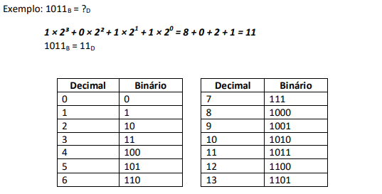

Os sistemas de numeração digital :
Um numeral é um símbolo ou grupo de símbolos que representa um número em um determinado instante da evolução do homem. Tem-se que, numa determinada escrita ou época, os numerais diferenciaram-se dos números do mesmo modo que as palavras se diferenciaram das coisas a que se referem. Os símbolos "11", "onze" e "XI" (onze em latim) são numerais diferentes, representativos do mesmo número, apenas escrito em idiomas e épocas diferentes. Um sistema de numeração, (ou sistema numeral) é um sistema em que um conjunto de números são representados por numerais de uma forma consistente. Pode ser visto como o contexto que permite ao numeral "11" ser interpretado como o numeral romano para dois, o numeral binário para três ou o numeral decimal para onze.
Os sistemas de numeração são usados para representar a quantidade de determinados elementos. O sistema mais usado pelas pessoas é o decimal. Esse sistema é formado por 10 algarismos. Para a eletrônica digital e sistemas de computação os sistemas binário, hexadecimal e octal são muito utilizados. Entender as diferentes formas de representação numérica é muito importante para se trabalhar com eletrônica e programação. A seguir apresentaremos os detalhes de cada um desses sistemas de numeração mencionados.
>
Sistema Decimal :
O sistema de numeração decimal, também chamado de sistema de numeração decimal posicional, é um conjunto de regras que são utilizadas para representar os números, sendo contabilizados com base 10. ... Portanto, na base 10 são utilizados 10 algarismos (0, 1, 2, 3, 4, 5, 6, 7, 8, 9). Usamos os números decimais com bastante frequência, especialmente para determinar quantidades de dinheiro, pequenas unidades de peso, de tempo ou de distância.
Para formar um número, associa-se um ou mais algarismos, e a posição de cada algarismo terá um peso de uma potência de 10. Dessa forma temos as unidades, dezenas, centenas e milhares. Cada posição terá um peso na representação:
Como exibido na figura acima, o sistema decimal é representado na base 10 e cada posição é múltiplo de uma potência de 10. A seguir são apresentados alguns exemplos:

No sistema decimal o símbolo 0 (zero) posicionado à esquerda do número escrito não altera seu valor representativo. Assim: 1; 01; 001 ou 0001 representam a mesma grandeza, neste caso a unidade. O símbolo zero posto à direita implica multiplicar a grandeza pela base, ou seja, por 10 (dez).
Sistema Binário :
O sistema binário ou base 2, é um sistema de numeração posicional em que
todas as quantidades se representam com base em dois números;
Símbolos da base Binária: 0 1
Os computadores digitais trabalham internamente com dois níveis de tensão, pelo que o seu sistema de numeração natural é o sistema binário (aceso, apagado). Com efeito, num sistema simples como este é possível simplificar o cálculo, com o auxílio da lógica booleana. Em computação, chama-se um dígito binário (0 ou 1) de bit, que vem do inglês Binary Digit. Um agrupamento de 8 bits corresponde a um byte (Binary Term). O sistema binário é base para a Álgebra booleana (de George Boole - matemático inglês), que permite fazer operações lógicas e aritméticas usando-se apenas dois dígitos ou dois estados (sim e não, falso e verdadeiro, tudo ou nada, 1 ou 0, ligado e desligado). Toda a eletrônica digital e computação está baseada nesse sistema binário e na lógica de Boole, que permite representar por circuitos eletrônicos digitais (portas lógicas) os números, caracteres, realizar operações lógicas e aritméticas. Os programas de computadores são codificados sob forma binária e armazenados nas mídias (memórias, discos, etc) sob esse formato.
Conversão de Decimal para Binário :
Divide-se sucessivamente por 2. Depois o número binário é formado pelo quociente da última divisão seguido dos restos de todas as divisões na seqüência em que foram realizadas.
Conversão de Binário para Decimal :
Deve-se escrever cada número que o compõe (bit), multiplicado pela base do sistema (base=2), elevado à posição que ocupa. A soma de cada multiplicação de cada dígito binário pelo valor das potências resulta no número real representado.
O "American Standard Code for Information Interchange" comumente referido como ASCII – também chamado ASCII completo, ou ASCII estendido –, é uma forma especial de código binário que é largamente utilizado em microprocessadores e equipamentos de comunicação de dados. Com 7 bits pode-se representar um total de 27 = 128 caracteres diferentes. Estes caracteres compreendem números decimais de 0 até 9, letras maiúsculas e minúsculas do alfabeto, mais alguns outros caracteres especiais usados para pontuação e controle de dados.
Sistema Hexadecimal :
O sistema hexadecimal é um sistema de numeração posicional que representa
os números em base 16, portanto empregando 16 símbolos.
Símbolos da base Hexadecimal: 0 1 2 3 4 5 6 7 8 9 A B C D E F.
O sistema hexadecimal está vinculado à informática, pois os computadores costumam
utilizar o byte como unidade básica da memória. 1 byte = 8 bits e então um byte pode
ser representado por 8 algarismos do sistema binário ou por 2 algarismos do sistema
hexadecimal. Ex: Bin = 10011100, Hexa= 9C.
Exemplo de equivalência das 3 bases vistas até agora:
Sistema Octal :
Sistema Octal é um sistema de numeração cuja base é 8, ou seja, utiliza 8 símbolos para a representação de quantidade. No ocidente, estes símbolos são os algarismos arábicos. O octal foi muito utilizado em informática como uma alternativa mais compacta ao binário na programação em linguagem de máquina.
Usabilidades :
- Como abreviação de binário;
- Representação de palavras de 16, 32 ou 62 bits;
- Descrições de codificação;
- Permissões de acesso a arquivos e cálculos;
- Telas digitais;
- Representação gráfica de cadeias de bytes;
- Aritmética inicial de ponto flutuante;
- Em transponders.
Tabela de Valores :
Sumário. . .
Site feito para o trabalho PIT no Colégio COTEMIG - (2021)
Equipe : TecPit
- Victor Alexandre - 3A2
- Gabriel Gonçalves - 3A2
- Pedro Augusto - 3A2